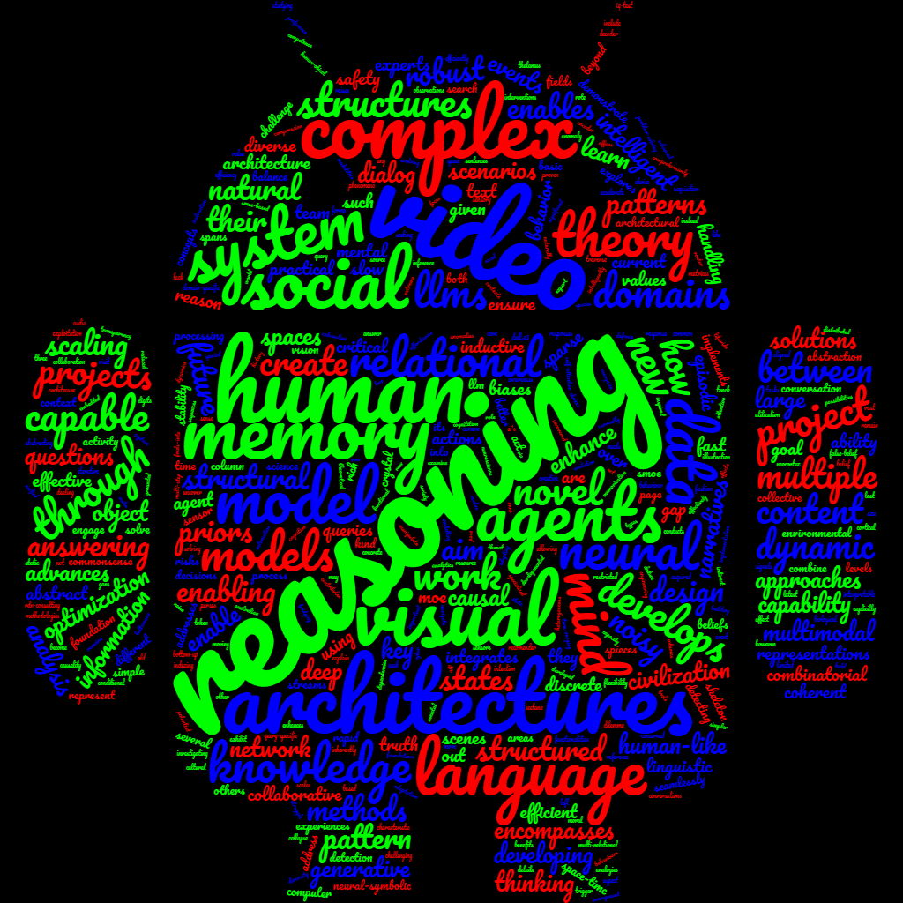

Build intelligent systems that can learn, reason, code, use tools, and act across practical settings while remaining guided by human agency, judgement, values, and oversight.
AI Future
Foundations for next-generation intelligence.
AI Future explores what it would take to build systems that can reason, code, remember, use tools, stay grounded, and operate reliably in open-ended settings.

Many baseline capabilities are now widely accessible, but agency, critical thinking, judgement, taste, and trustworthy long-horizon action remain hard.
Agent architectures, judgement, coordination, evaluation, and reliability in open environments.
Core Directions
Agency, judgement, and practical alignment.
Agent ecosystems
Beyond a single model, the long-range goal is to understand how multiple agents, tools, and memory systems can work together while preserving human agency and judgement.
Critical thinking and memory
Structured reasoning, memory, retrieval, evaluation, and system-level capability remain central because capability without critical thinking and judgement is not enough.
Alignment and safety
Truth, values, oversight, and practical governance are treated as integral parts of the system design problem.
- AI: The tipping point, VASEA, 2025
- The 2024 Nobel Prize in Physics, public lecture, 2024
- Deep learning and reasoning: Recent advances, VIASM Summer School, 2023
- Machine reasoning tutorials and invited talks across 2020-2024